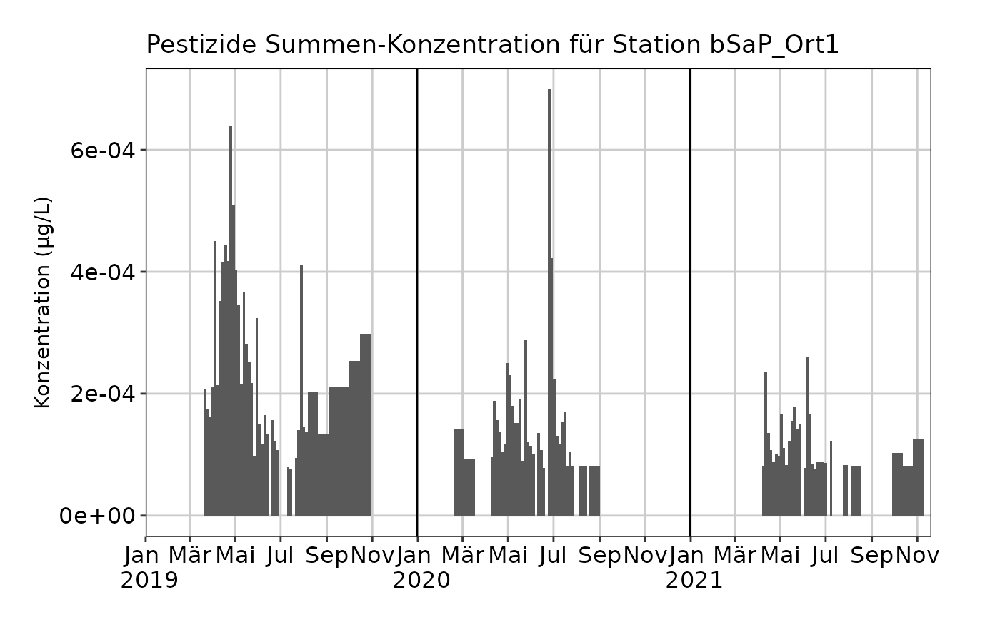
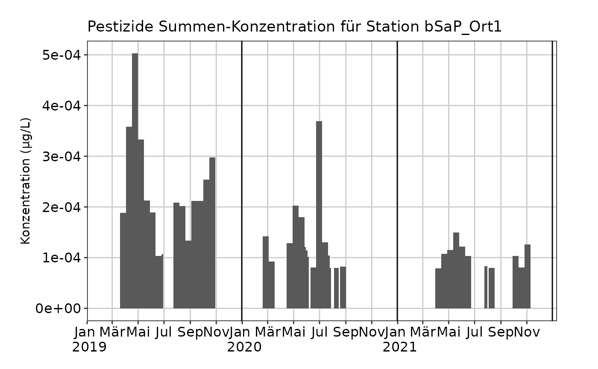

Berechnete Mischproben
berechnete-mischproben.RmdEinleitung
mvwizr unterscheidet grundsätzlich zwischen zwei verschiedenen Probearten: Stichproben und Mischproben oder Sammelproben (mvwizr macht keine Unterscheidung zwischen zeit- und abflussproportionalen Mischproben). Bei den Sammelproben gibt es einerseits kurze Proben mit einer Dauer von 3.5-Tagen, die gut geeignet sind um akute Belastungen zu bewerten und zu finden und andererseits Zweiwochenmischproben (14-Tage), die für die Beurteilung anhaltender Belastungen relevant sind. Teilweise werden am gleichen Standort sowohl (phasenweise) 3.5-Tage-Mischproben und 14-Tagemischproben genommen. In einigen Fällen wird im Anschluss aus 3.5-Tage-Mischproben rechnerisch eine 14-Tage-Mischprobe erstellt, eine sogenannte berechnete Mischprobe.
mvwizr kann automatisch 3.5-Tage-Mischproben, die für die Berechnung
von berechneten 14-Tage-Mischproben verwendet wurden, aus dem Datensatz
entfernen. So wird sichergestellt, dass jede Probe nur einmal
gezählt/bewertet wird. Damit dies klappt, benötigt mvwizr eine Angabe
über die Art der Mischprobe: Intern verwendet das Paket die
Bezeichnungen SaP für tatsächliche Mischproben und
bSaP für berechnete Mischproben (angelehnt an die
Nomenklatur des GBL). Unglücklicherweise ist im NAWA-MV-Format des BAFU
kein solches Attribut definiert, resp. es wird nur zwischen Stichproben
(mvwizr-intern S) und Mischproben unterschieden.
Auch müssen diese zur Berechnung verwendeten 3.5-Tage-Mischproben innerhalb des Intervalls der berechneten 14-Tage-Mischprobe liegen. Falls die 3.5-Tage-Proben verschoben sind, so werden diese nicht korrekt erkannt und entfernt!
bSaP-Daten verarbeiten - Beispiel
Das folgende Beispiel soll aufzeigen, wie im Fall von NAWA-MV-Daten dennoch konsistente Datensätze mit bSaP-Messungen eingelesen werden können.
- Wichtig ist dabei, dass berechnete Mischproben und gemessene
Mischproben (und ggf. Stichproben) in (zwei) unterschiedlichen Dateien
vorliegen und im gleichen Vorgang mit
batch_einlesen_nawa()eingelesen werden (damit die UID-Nummerierung stimmt). Beispiel:
mv_bsap_pfade <- system.file("extdata", c(
"NAWA_ohne_bSaP_Bsp.xlsx",
"NAWA_mit_bSaP_Bsp.csv"
), package = "mvwizr")- Im nächsten Schritt muss nun manuell das “bSaP”-Attribut den Daten
hinzugefügt werden (dort wo es sich um berechente Mischproben handelt).
Da diese hier in einer separaten Datei vorlagen und der Dateiname im
Dataframe enthalten ist, kann das Attribut ganz leicht korrekt gesetzt
werden. Die Warnungen, die
batch_einlesen_nawa()dabei zeigt, sollten aufmerksam gelesen werden - oft handelt es sich um Fälle von fehlenden Zuordnungen von Substanzen zur VSA-ID oder sonstigen Fehlern, die sich manuell beheben lassen.
mv_df_alle <- batch_einlesen_nawa(mv_bsap_pfade) |>
# Wir setzen bSaP nur dort, wo die Daten aus der Datei mit den berechneten Mischproben stammen
dplyr::mutate(PROBEARTID = dplyr::if_else(.data$filename ==
"NAWA_mit_bSaP_Bsp.csv", "bSaP", .data$PROBEARTID))
#> ℹ Keine Import-Manifest-Datei angegeben. Lese Dateien ein und errate Funktionsparameter...
#>
#> ── (1/2) Lese NAWA_ohne_bSaP_Bsp.xlsx ... ─────────────────────────────────────
#> Warning: ! VSA-Lookup: 2 mehrfache Bezeichnungen (VSA Parameter-ID) pro Substanz_ID
#> gefunden. Verwende tiefere Substanz_ID.
#> ℹ Betroffen: 8_2-FTCA, SiO2
#> ℹ Lese MV-Daten von Excel-Datei /home/runner/work/_temp/Library/mvwizr/extdata/NAWA_ohne_bSaP_Bsp.xlsx ein.
#> ℹ Versuche Start des Tabellen-Headers der Datei /home/runner/work/_temp/Library/mvwizr/extdata/NAWA_ohne_bSaP_Bsp.xlsx zu erraten.
#> ✔ Erkannter Header-Start: Zeile 8.
#> ℹ Versuche Sprache der Datei /home/runner/work/_temp/Library/mvwizr/extdata/NAWA_ohne_bSaP_Bsp.xlsx zu erraten.
#> ✔ Erkannte Sprache: DE.
#> ℹ Versuche Parameter-Feld der Datei /home/runner/work/_temp/Library/mvwizr/extdata/NAWA_ohne_bSaP_Bsp.xlsx zu erraten.
#> ✔ Erkannter Parameter: BAFU_Parameter_ID.
#> ! Bestimmungsgrenzen wurden nicht als Zahlen eingelesen - versuche Typenkonvertierung.
#> ℹ Normalisiere Einheiten der MV-Daten auf µg/l.
#> ℹ Max./min. Bestimmungsgrenzen der MV-Daten bestimmen...
#>
#> ── (2/2) Lese NAWA_mit_bSaP_Bsp.csv ... ───────────────────────────────────────
#> Warning: ! VSA-Lookup: 2 mehrfache Bezeichnungen (VSA Parameter-ID) pro Substanz_ID
#> gefunden. Verwende tiefere Substanz_ID.
#> ℹ Betroffen: 8_2-FTCA, SiO2
#> ℹ Lese MV-Daten von Text-Datei /home/runner/work/_temp/Library/mvwizr/extdata/NAWA_mit_bSaP_Bsp.csv ein.
#> ℹ Versuche Encoding der Datei /home/runner/work/_temp/Library/mvwizr/extdata/NAWA_mit_bSaP_Bsp.csv zu erraten.
#> ✔ Erkanntes Encoding: UTF-8
#> ℹ Versuche Trennzeichen der Datei /home/runner/work/_temp/Library/mvwizr/extdata/NAWA_mit_bSaP_Bsp.csv zu erraten.
#> ✔ Erkanntes Trennzeichen: ;
#> ℹ Versuche Start des Tabellen-Headers der Datei /home/runner/work/_temp/Library/mvwizr/extdata/NAWA_mit_bSaP_Bsp.csv zu erraten.
#> ✔ Erkannter Header-Start: Zeile 1.
#> ℹ Versuche Sprache der Datei /home/runner/work/_temp/Library/mvwizr/extdata/NAWA_mit_bSaP_Bsp.csv zu erraten.
#> ✔ Erkannte Sprache: DE.
#> ℹ Lese NAWA-MV-Daten von /home/runner/work/_temp/Library/mvwizr/extdata/NAWA_mit_bSaP_Bsp.csv ein.
#> ℹ Versuche Parameter-Feld der Datei /home/runner/work/_temp/Library/mvwizr/extdata/NAWA_mit_bSaP_Bsp.csv zu erraten.
#> ✔ Erkannter Parameter: BAFU_Parameter_ID.
#> ℹ Normalisiere Einheiten der MV-Daten auf µg/l.
#> ℹ Max./min. Bestimmungsgrenzen der MV-Daten bestimmen...
#> ℹ Kombiniere MV-Daten aus 2 Dateien...
#> ✔ MV-Daten erfolgreich eingelesen und kombiniert.- Im nächsten Schritt können die bSaP-Proben nun korrekt prozessiert werden:
mv_mit_bsap <- prozessiere_bSaP(mv_df_alle, bSaP_identifier = "PROBEARTID") |>
dplyr::mutate(Dauer = difftime(.data$ENDEPROBENAHME,
.data$BEGINNPROBENAHME,
units = "days"
))
nrow(mv_mit_bsap)
#> [1] 59- Alternativ können alle berechneten Proben über das Attribut auch herausgefiltert werden, wenn man alle 3.5-Tage-Proben im Dataframe behalten will:
MV-Daten im Vergleich
Der Vorteil dieses Vorgehens ist, dass die Datensätze nun einfach verglichen werden können:
plot_misch_verlauf(mv_ohne_bsap, stationscode = "101099")
Es ist klar sichtbar, dass die Konzentrationsspitzen im Datensatz mit den berechneten Mischproben stark rausgeglättet worden sind:
plot_misch_verlauf(mv_mit_bsap, stationscode = "101099")